01
Runeboard
Strategy / cards
JUAN MARTINEZ · AI ENGINEER
Machine Learning, Deep Learning, Reinforcement Learning, Creative AI (2D, 3D), NLP, Gameplay AI, Data Science & Analytics
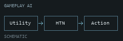
Hex-and-card strategy game with layered Utility AI, blackboards, hierarchical task planning, behaviour trees, and an MLP for strategic decisions.
Read the dev diary ↗01 / IN MOTION
A collection of gameplay moments.
Press play to explore each game, or open a GIF.
Strategy / cards
Gameplay reel
Gameplay reel
Gameplay reel
Gameplay reel
Gameplay reel
Gameplay reel
Gameplay reel
Gameplay reel
Gameplay reel
Gameplay reel
02 / APPLIED AI
Image adaptation, controlled generation,
and retrieval-based NPC dialogue.
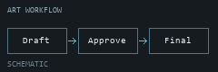
Generates concept art from isolated style references using GPT Image or a trained LoRA. Requires human approval before exporting transparent 2K finals.
IMAGE ADAPTATION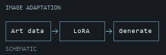
Trains private Qwen-Image LoRA adapters on captioned artwork, then serves image generation through Gradio and an asynchronous API. Supports background removal and upscaling.
RETRIEVAL + GENERATION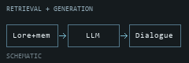
Python library for NPC dialogue using LLMs, retrieved world lore, short- and long-term memory, personality, mood, and motivations. Supports streamed inference with vLLM.
03 / THE SOURCE
Every public repository, organized by focus.
Forks are collected separately.
Hex-and-card strategy game with layered Utility AI, blackboards, hierarchical task planning, behaviour trees, and an MLP for strategic decisions.
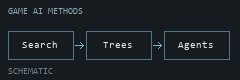
Collection of game-AI implementations and articles: C++ pathfinding, Unity behaviour trees and blackboards, local LLM integration, and Unreal gameplay examples.
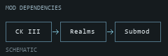
Crusader Kings III submod for Realms in Exile, extending Nazgul territories, cultures, characters, units, and scenario rules.
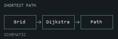
C++ shortest-path finder for a 2D grid, using Dijkstra with movement checks, matrix helpers, and tests for edge cases.
Generates concept art from isolated style references using GPT Image or a trained LoRA. Requires human approval before exporting transparent 2K finals.
Trains private Qwen-Image LoRA adapters on captioned artwork, then serves image generation through Gradio and an asynchronous API. Supports background removal and upscaling.
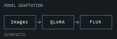
Gradio workbench for FLUX.1-dev inference and LoRA training on image-caption pairs, with quantization and multi-GPU training options.
Python library for NPC dialogue using LLMs, retrieved world lore, short- and long-term memory, personality, mood, and motivations. Supports streamed inference with vLLM.
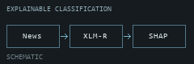
Toxic-news classification with XLM-RoBERTa and Hugging Face Trainer, Optuna tuning, and SHAP explanations of model predictions.
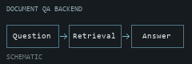
Document question-answering backend built with FastAPI, LangChain, OpenAI, and Chroma vector storage. Includes user authentication and Docker deployment.
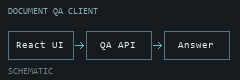
React and Vite frontend for the document question-answering application, paired with the Document QA backend.
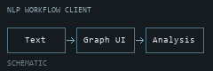
Angular frontend for TeaNLP: a graph-based interface for transforming, extracting, and analyzing text.
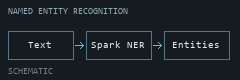
Demonstrates a Spark NLP named-entity recognition pipeline using a model from Hugging Face, with a Gradio interface and biomedical training data.
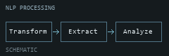
NLP graph project for transforming, extracting, and analyzing text; the documentation includes part-of-speech tag references.
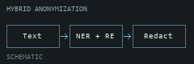
Combines Flair neural entity recognition with regular expressions to anonymize text extracted from PDFs, including names, dates, and Spanish identifiers.
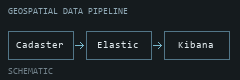
Collects Spanish cadastral records and property plans from XML services or HTML, indexes them in Elasticsearch, and visualizes locations in Kibana.
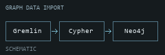
Cypher snippets for importing Gremlin JSON nodes and edges into Neo4j.
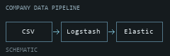
Company and person CSV datasets with Logstash configurations and Elasticsearch setup scripts for indexing and exploring relationships in Kibana.
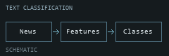
Compares statistical classifiers on HuffPost news, with configurable text features, Doc2Vec embeddings, and train/test splits.
GitHub profile README introducing AI engineering, game development, professional experience, and links to selected work.
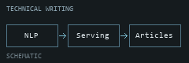
Index of technical articles on Spark NLP deployment, API serving, MLflow tracking, Hugging Face integration, and document-cluster visualization.
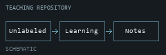
Repository for Spanish-language unsupervised-learning teaching materials. Its current contents are an introductory README.
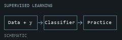
Spanish-language machine-learning teaching materials, including classification practice notebooks, solutions, and lecture slides.
Static portfolio organizing public repositories and gameplay recordings, published through GitHub Pages.
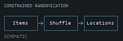
Fork of randomizers for Dark Souls III, Sekiro, and Elden Ring. Item placement accounts for progression dependencies and configurable weighting.
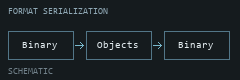
Fork of a .NET library for reading and writing FromSoftware game formats, including archive and compression handling.
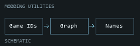
Fork of C# modding helpers built around SoulsFormats, including an in-memory graph for assigning meaningful names to game IDs.
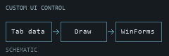
Fork of a Windows Forms control that supports custom, user-drawn tabs.
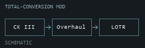
Fork of the Lord of the Rings total-overhaul mod for Crusader Kings III, covering characters, territories, events, and worldbuilding.
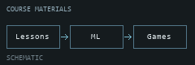
Fork of the Hugging Face Machine Learning for Games course, containing lesson sources and notebooks.
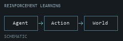
Fork of the Hugging Face Deep Reinforcement Learning course, containing lesson sources and notebooks.
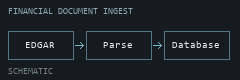
Fork of the OpenEDGAR framework for retrieving and parsing SEC EDGAR filings into databases, with Docker installation support.
No projects match your search. Try another name or topic.
A BIT ABOUT ME
AI Engineer: Machine Learning, Deep Learning, Reinforcement Learning, Creative AI (2D, 3D), NLP, Gameplay AI, Data Science & Analytics
Find me on LinkedIn ↗{kind=link}
{kind=link}
{kind=link}
{kind=link}
{kind=link}
{kind=link}
{kind=link}
{kind=link}
{kind=link}
{kind=link}
{kind=link}